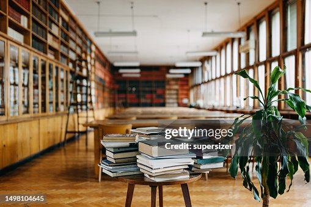

Sobre a Biblioteca
A Biblioteca Pública Vozes foi fundada em 15 de março de 1998, no Distrito Federal, com o objetivo de ampliar o acesso da população à leitura, à informação e às atividades culturais.
Desde sua inauguração, a biblioteca tornou-se um espaço de encontro entre diferentes gerações,
oferecendo acervo diversificado, incentivo à formação de leitores e eventos culturais voltados à comunidade.
Ao longo dos anos, a Biblioteca Vozes consolidou-se como um importante centro de conhecimento e inclusão social,
valorizando a pluralidade de ideias e dando voz aos saberes da comunidade.
Atualmente, a instituição é reconhecida como um importante centro de conhecimento e convivência,
reunindo diferentes gerações em um ambiente inclusivo, acessível e comprometido com a formação de leitores, o fortalecimento da cidadania e a democratização do acesso à informação.
Seu nome simboliza a diversidade de ideias, histórias e saberes que encontram espaço na biblioteca,
fazendo dela um ponto de encontro entre a comunidade e o conhecimento.
Promover o acesso democrático à informação, ao conhecimento, à leitura e à cultura, oferecendo um ambiente acolhedor, inclusivo e acessível que incentive o aprendizado,
a pesquisa, a formação de leitores e o desenvolvimento social da comunidade.
Ser reconhecida como uma biblioteca pública de referência na promoção da educação,
da cultura e da inclusão social, contribuindo para a formação de cidadãos críticos,
participativos e conscientes por meio do acesso livre ao conhecimento e da valorização da diversidade de saberes.

A Biblioteca Pública Vozes é destinada a toda a comunidade, atendendo crianças, adolescentes, jovens, adultos, idosos, estudantes, professores, pesquisadores e pessoas com deficiência. Seu objetivo é oferecer acesso gratuito à informação, à leitura, à cultura e à educação, promovendo inclusão, aprendizado e desenvolvimento para todos.